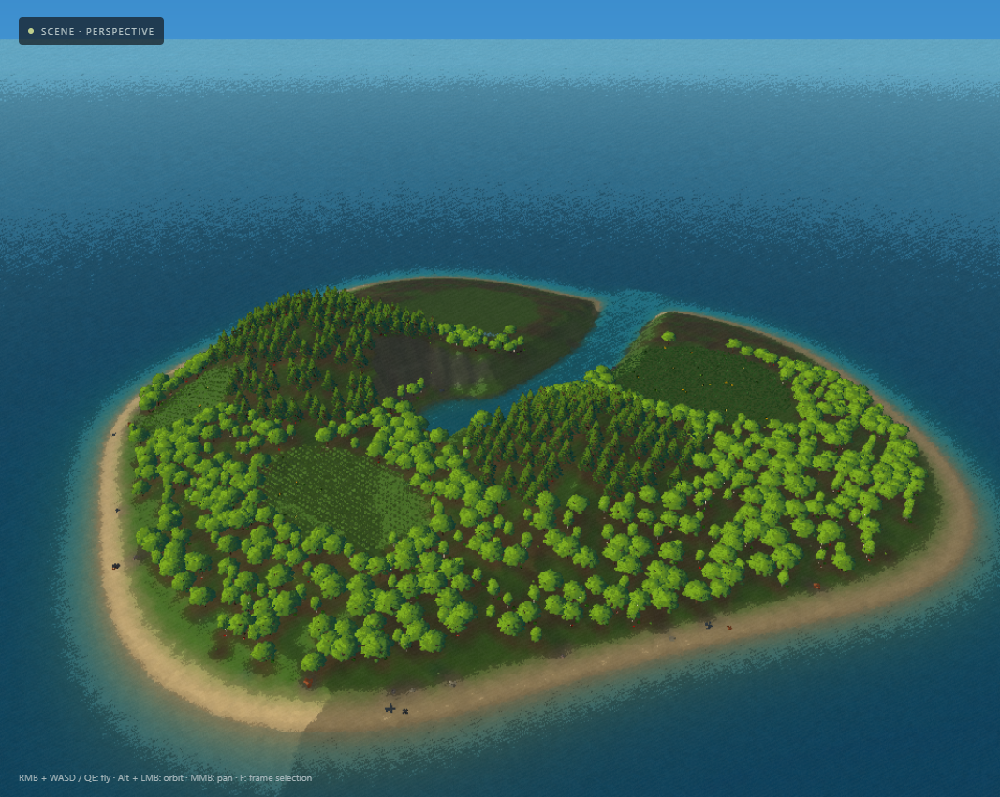
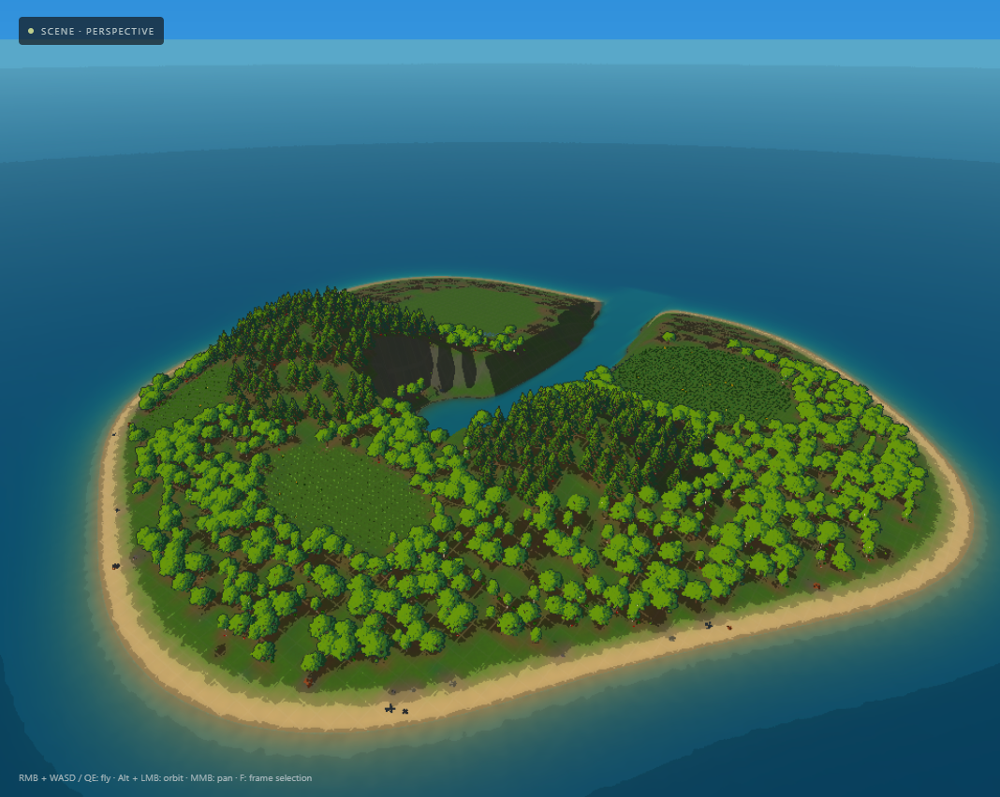
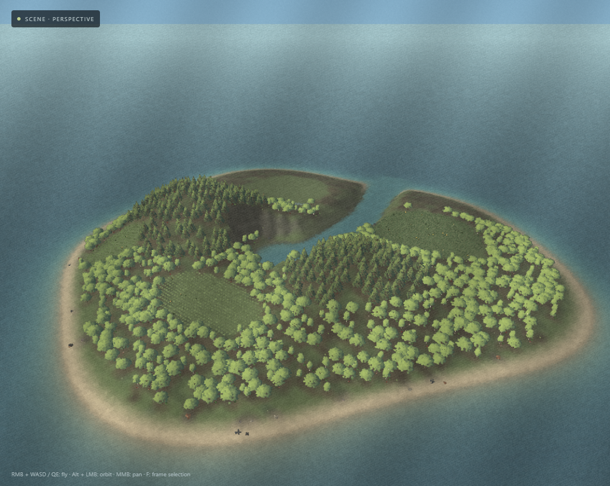

Painted Background
Soft painted colour clusters and volume lighting.

The same island, camera and lighting. CUDA WebShader rendering.
Soft painted colour clusters and volume lighting.

Clean light bands, saturated colour and stronger contours.

Pale washes, paper pigment and broken ink edges.
